在易语言中主要使用面向过程进行程序设计，额外提供了类模块实现面向对象程序开发。
而在火山中则全部采用了面向对象进行程序设计，并且火山中的类所提供的功能比易语言的类模块功能更加丰富。
关于火山如何进行面向对象程序设计，可看新手教程中的面向对象程序设计。
程序集是易语言子程序的集合，在火山中并无程序集的概念，但是提供了“包”。
包名通常名字为“公司名称+软件名称+功能分类”进行命名。例如：“递归.火山软件.主程序”或者“火山软件.文本操作模块”等，只要方便自己后期维护任何命名都可以，但是包名中必须保证至少有一个小数点。
在易语言中程序集名称随意，无句点要求，如下所示：
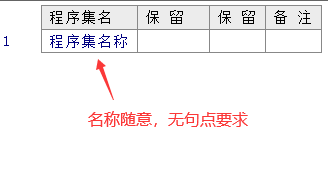
在火山程序中每个火山源文件都会有一个包名，无法删除且固定于程序首行位置，并且一个源文件只能存在一个包名。
注：调试版可以忽略包名不写，编译发布版必须提供包名。
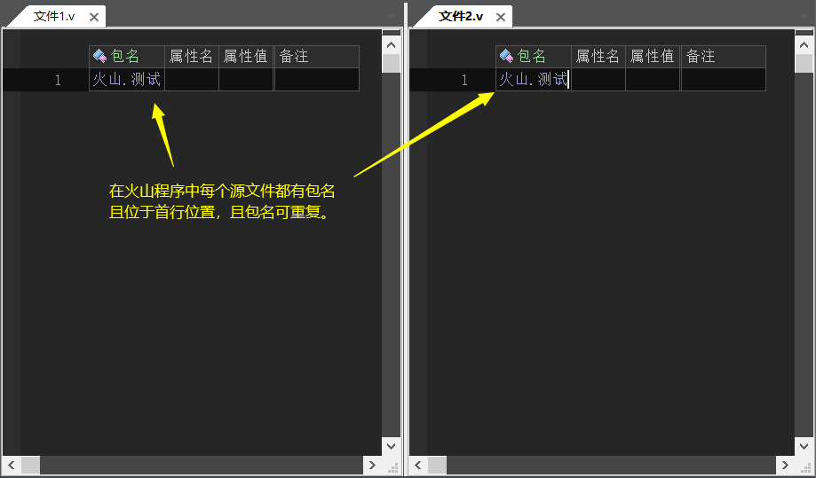
在易语言中每个程序集都需要提供一个程序集名称，也可以忽略：
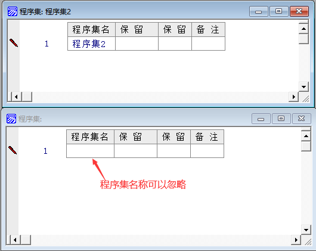
不同源文件的包名可重复，程序会自动将两个文件归位一个包内，相同包名的文件即使不公开类也可以实现跨文件调用。
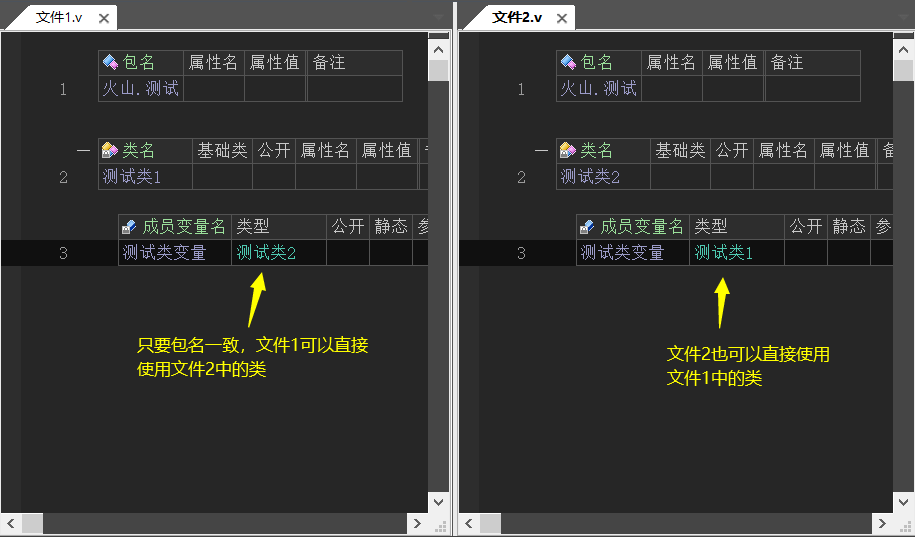
易语言中的程序集即便是程序集名称不同，子程序不进行公开也可以实现跨程序集访问子程序。
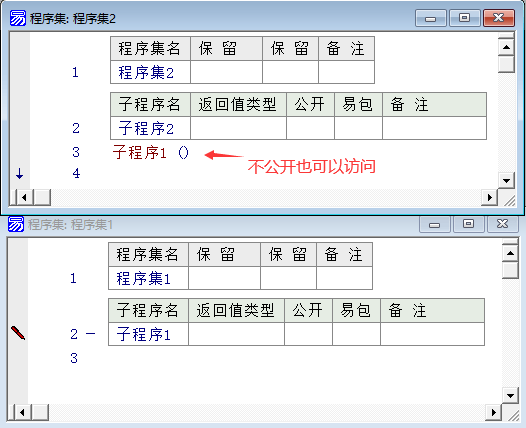
但是在火山中，如果两个火山源文件的包名不一致，则需要公开类才能被其它包的程序访问。
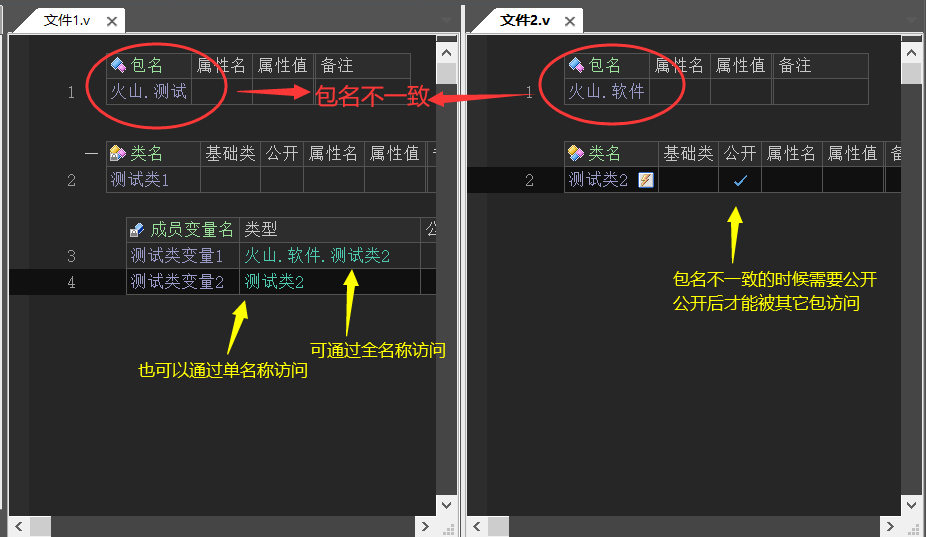
易语言的程序集、子程序、参数的注释都位于备注栏，不支持换行。
语句注释需要使用单引号进行注释。
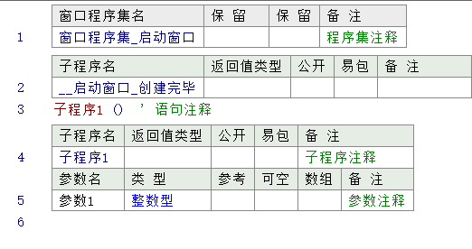
火山的注释有以下几种形式：
3.1 以双斜杠“ //”字符串引导，说明其处于被注释状态，其以及其中的所有内容(包括直接/间接子成员)在编译时都将被忽略。
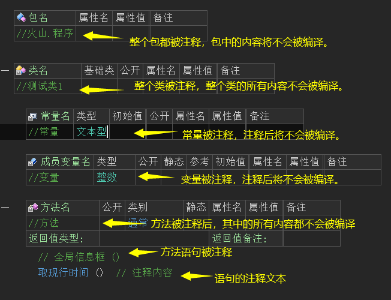
3.2 在类外部的程序行，被称为文档注释行。文档注释行的添加，只需要光标定位类名一栏，然后按键盘上的“ins/insert”键就可以插入文档注释行，部分电脑需要按下组合键“Fn+ins”键才可以插入。
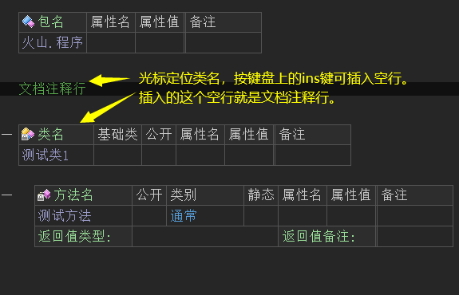
3.3 在类内部但是在类方法外部的程序行，被称为类注释行。类注释行的添加同文档注释行一致，光标定位方法名按“ins”键即可。
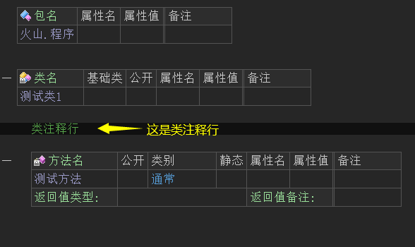
3.4 在火山代码表格的备注栏输入，也属于注释文本，此注释文本可以在火山代码中被悬浮提示。除了类备注外，方法/变量/常量等备注信息都可以通过提示框显示出来。
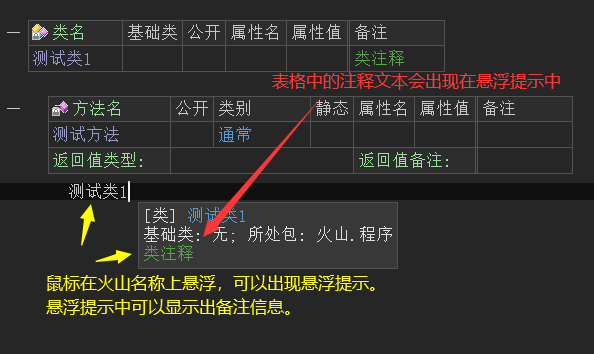
3.5 在注释文本中如果以一个或多个减号/等号字符结束，火山将会自动在其后绘制对应长度的单/双分隔线，如下图所示：
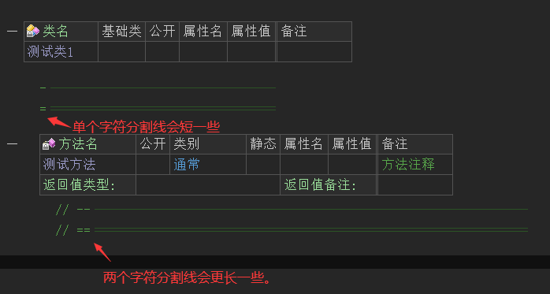
3.6 火山中的注释支持多行，如下图所示：
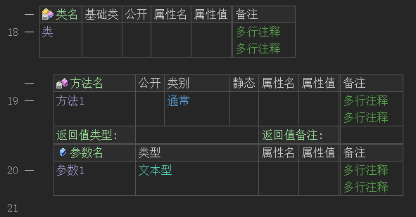
4.1 类的构成差异
易语言类模块是单独存在的，用于扩展易语言面向对象程序设计，其各个子成员如下：
1. 类名。
2. 私有成员变量。
3. 方法。
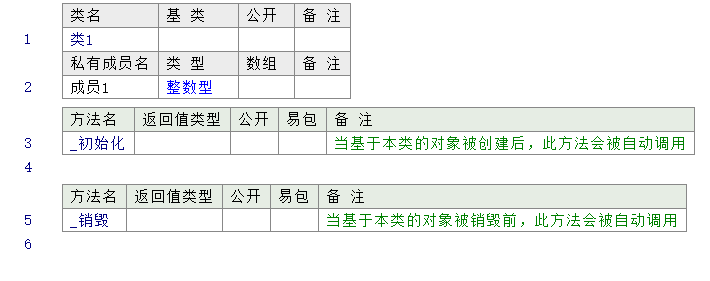
在火山中的类相比易语言强大很多，提供了更加丰富的子成员，其成员变量也支持公开，以便于其它类访问使用，如下所示：
火山视窗程序结构:
1. 包定义
1. 文档嵌入行(知道即可无需了解)
2. 文档注释行
3. 类定义
1. 类嵌入行(知道即可无需了解)
2. 类注释行
3. 类成员常量
4. 类成员变量
5. 类成员方法
1. 方法参数
2. 方法局部常量
3. 方法局部变量
4. 语句注释行
5. 语句行
6. 语句嵌入行(知道即可无需了解)
火山视窗程序结构演示：
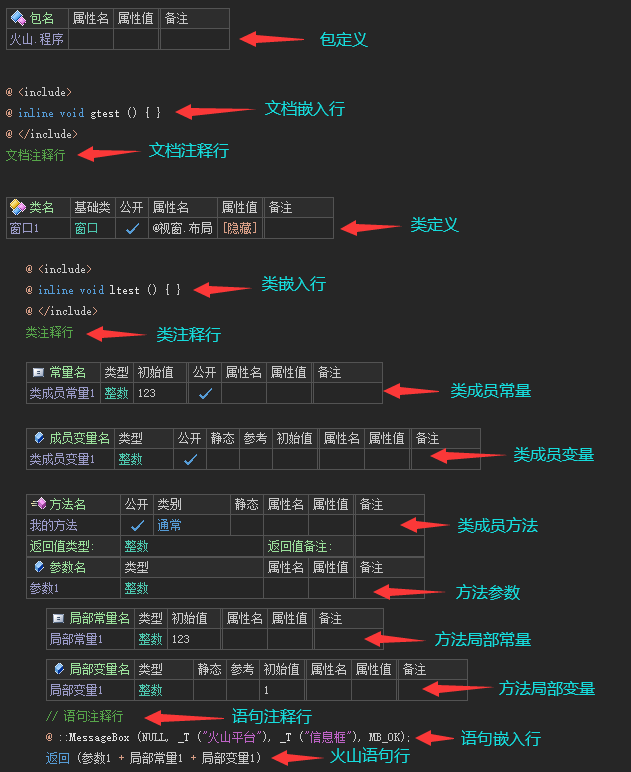
4.2 初始化和销毁差异
在易语言中添加类模块会自动添加类的“_初始化”和“_销毁”方法，用于创建对象时初始化数据或销毁数据。
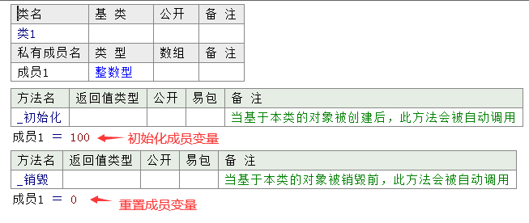
在火山中，需要通过“Ctrl + I”打开插入特定内容窗口，手动插入“类_初始化”和“类_清理”。
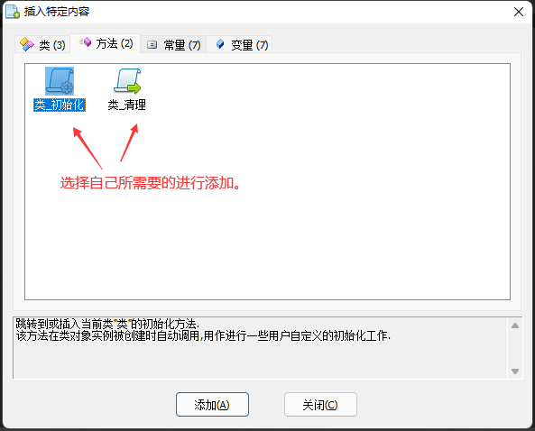
使用效果如下图：
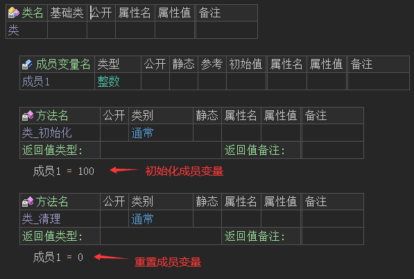
4.3 启动方式的不同
火山中名叫“启动类”的类被用作指定用户程序的启动入口类，和易语言中“_启动窗口”或“_启动子程序”作用一致，用户程序将从此处开始执行，并且启动类在整个用户程序中只能存在一个且不允许修改其名称。
不同火山程序的启动类的样式不同，并不是固定的，是由新建项目时模板程序自动生成的，如下所示：
创建火山视窗“MFC窗口程序”项目时：
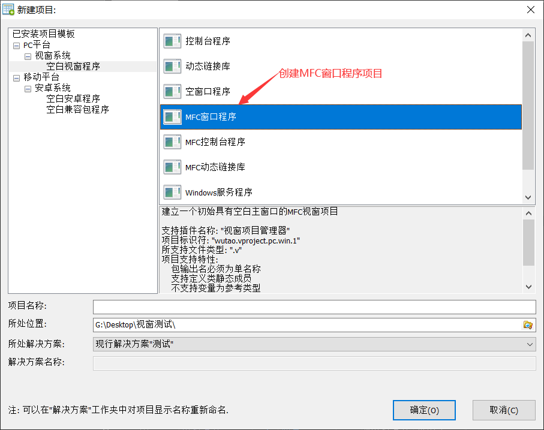
会自动生成“启动类”和对应的“主窗口”类，用于视窗程序的启动。
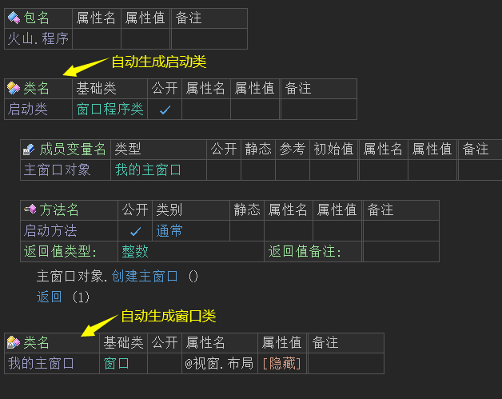
4.4 自定义类差异
在易语言中需要通过右键“程序数据”进行插入类模块。
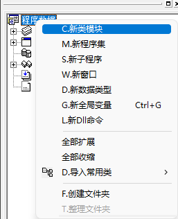
插入后的类模块都是独立存在的，互不干扰。
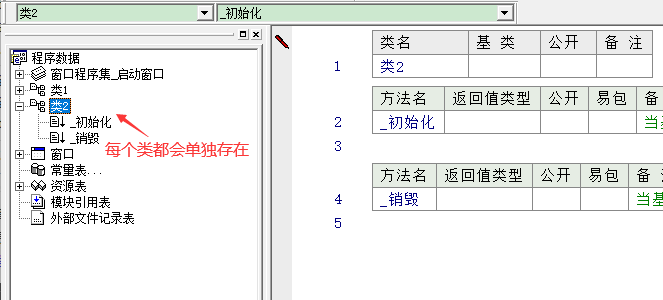
火山中定义类需使用“ctrl+D”快捷键进行定义，或者鼠标右键选择“插入->插入新类”进行定义类操作。
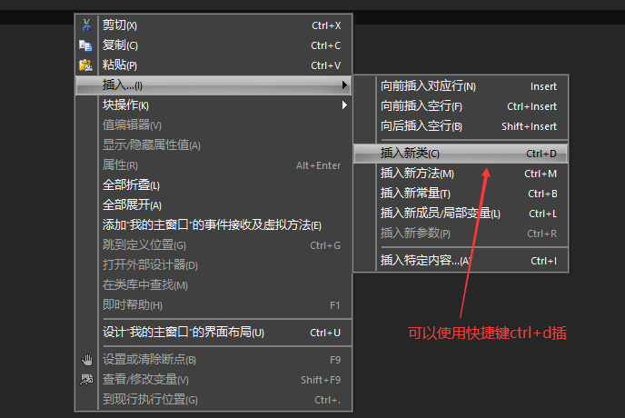
相对于易语言固定死的类模块，火山中更加自由，每个火山源码文件可以创建N个类，在创建类时可以将相关类创建到一个火山源码文件中，以便于后续的维护和管理。
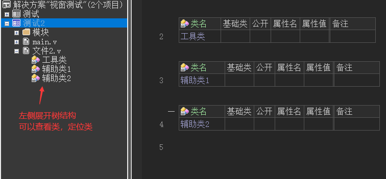
4.5 基本属性表
(1) 基础类
易语言基础类演示：
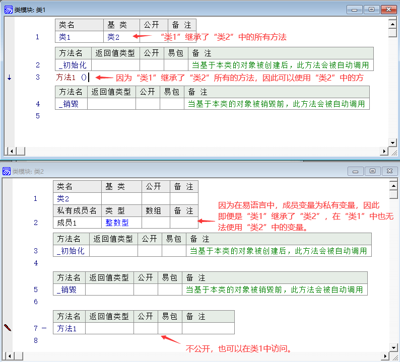
火山基础类演示：
相对于易语言中的基础类，火山中的基础类更强大，可以同时访问基础类中的成员变量及方法。
如果在火山中定义了非空基础类，当前类将自动继承所有来自该基础类的内容，如果该基础类还有基础类，将一并继承过来，此时本类称为这些类的“继承类”。
注: 有一些编程语言也称“继承类”为“子类”，“基础类”为“父类”，意思是一样的。
继承类访问其直接/间接基础类中的成员不需要其为公开状态。
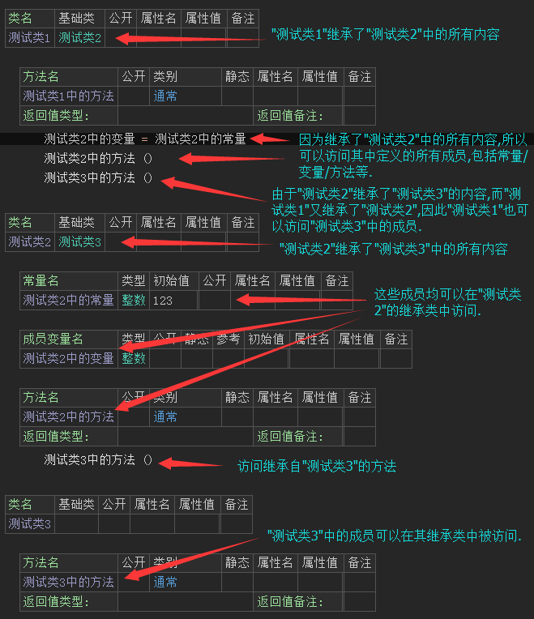
(2) 公开
在易语言中类模块的公开仅针对易模块有效，用于当前类是否对外公开，如果在程序中即便此类不进行公开，也可以被程序所访问。
注：如果想要访问类模块中的方法，方法必须公开。
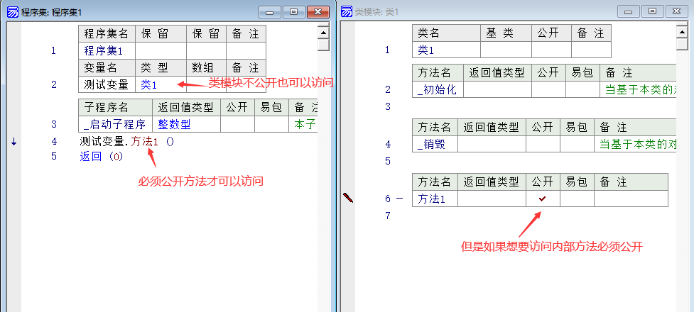
在火山中公开类可以在所处包外部被访问，而非公开类只能在所处包内部被访问。
如下图所示：文件1的包名和文件2的包名不一致，文件1想要使用文件2中的类，必须公开文件2中的类。
而文件2中未公开的类，只能在“火山.软件”的包中使用。
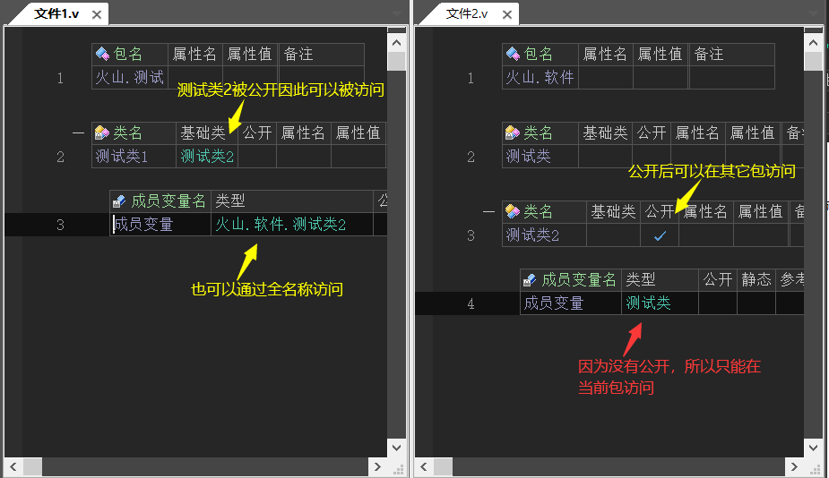
4.6 注意事项
(1) 同一个包中暂时不允许出现相同的类名，如下图所示是错误的。
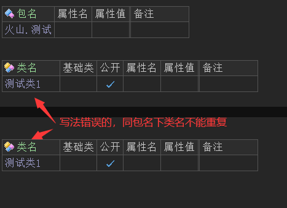
同项目下，只要包名一致不同文件下也不允许类名重复，如下图所示的写法是错误的。
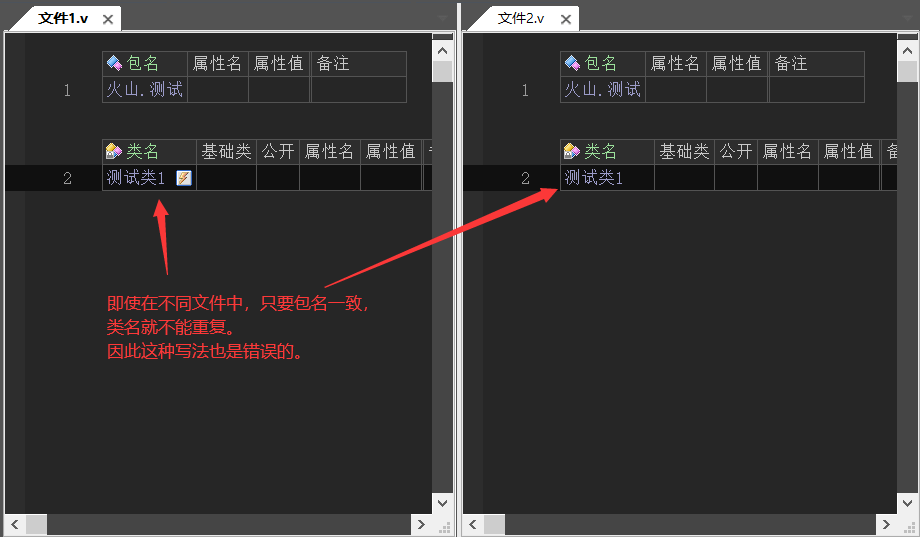
(2) 类名为单名称(即其中不允许使用小数点)，如下图所示是错误的。
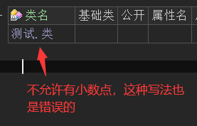
(3) 引用类名时可以直接使用类名称，或者使用“包名.类名”进行引用，此格式被称为类的全名称。
注意：如果调用其它火山源文件的类，注意观察两个源文件包名是否一致，如果不一致要注意公开类才可以被访问到。
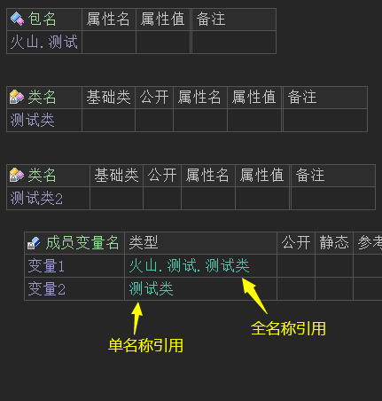
5.1 局部变量
易语言演示：
（1）在易语言中局部变量只能位于子程序和程序语句中间，如果你想要在某个程序语句下方插入一个变量，在易语言中是不支持的。
（2）易语言的局部变量提供了“变量名、类型、静态、数组、备注”五种类型。
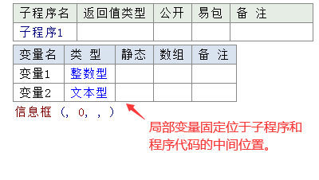
火山演示：
（1）在火山中局部变量可以在方法中的任意位置插入，相比易语言来说更加灵活，也方便后期维护和整理。
（2）火山中的局部变量提供了“变量名、类型、静态、参考、初始值、属性名、属性值、备注”八种类型。
注1：在火山视窗中“参考”类型暂不支持操作。
注2：“初始值”只支持基本属性类型设置初始值，对象类型不支持设置初始值。
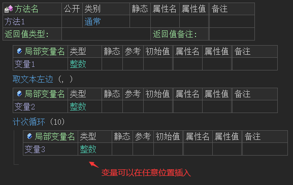
变量定义：
在火山中变量的定义和易语言一致，都是通过快捷键“Ctrl+L”进行创建，或者使用右键菜单中的“插入->插入新成员/局部变量”来进行定义变量操作。
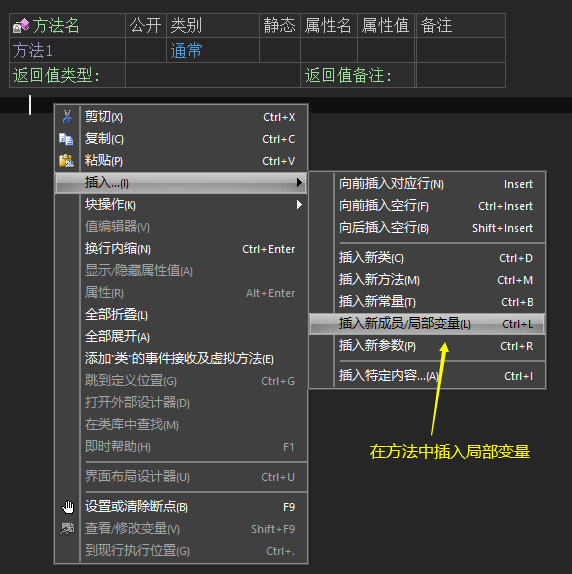
如果想要新增变量还可以在已有变量的基础上，按“Enter”(回车键)增加新的变量。
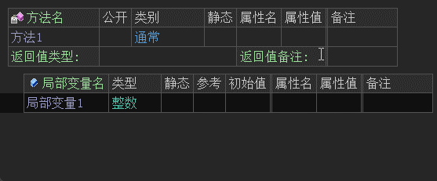
5.2 程序集变量
易语言中的程序集变量，就相当于火山中的成员变量。不同之处为，火山的成员变量可以在任意方法的上方或者下方插入而易语言的程序集变量只能在程序集的首部位置插入。
易语言程序集变量演示：
（1）其变量只提供了“变量名、类型、数组、备注”四种类型。
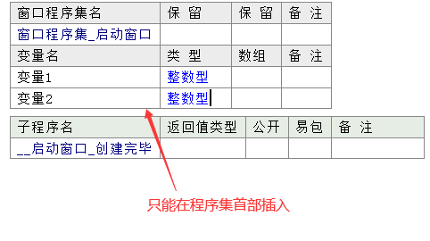
火山成员变量演示：
（1）在火山中插入成员变量的快捷键也是“Ctrl + L”，只要不在方法的子语句体内进行插入，那么插入的变量就是成员变量。
（2）其成员变量提供的类型相对于局部变量多了一个“公开”类型，可用于公开当前变量提供给其它类调用。
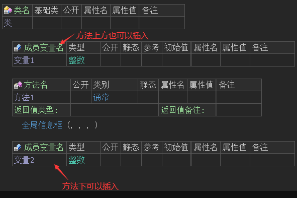
5.3 全局变量
易语言全局变量演示：
（1）在易语言中可通过快捷键“Ctrl + G”可创建全局变量。
（2）全局变量为单独的一个表，定义后即便不进行公开也可以在程序任意位置访问。
（3）全局变量共有“变量名、类型、数组、公开、备注”五种类型，其中公开仅对易模块有效。
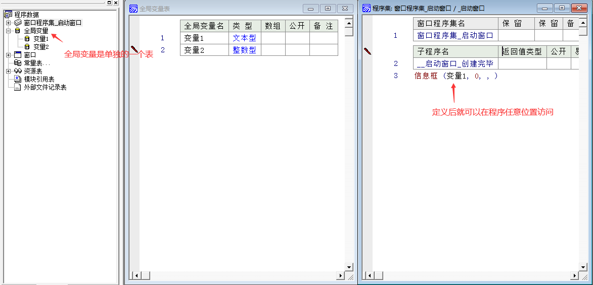
火山全局变量演示：
在火山中其实没有易语言中全局变量的概念，但是可以通过“类+成员变量”的形式间接实现，如下图所示：
当成员变量勾选公开和静态后，就可以通过“类+成员变量”的形式间接实现易语言中全局变量的效果。
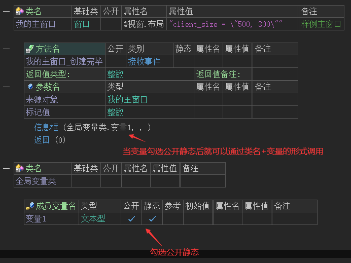
注：如果跨文件调用时，需要注意两个文件的包名是否一致，如果不一致需要同时公开类才可以访问，如下图所示：
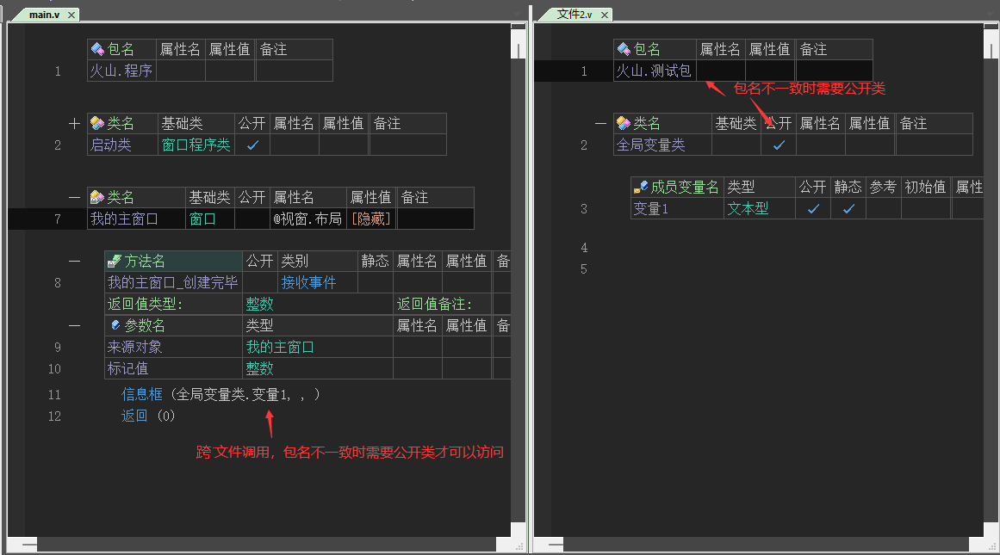
5.4 变量的初始值
在易语言中所有的基本数据类型都是具有默认值的，但是如果想要设置其它默认值必须通过赋值的形式实现，如下所示：
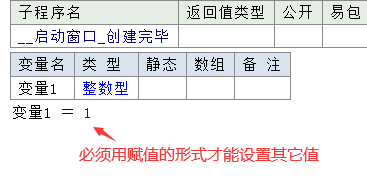
在火山中变量的初始值设置大致分为以下三种类型，“基本数据类型”、“类数据类型”和“数组数据类型”，每种类型的初始值都是不同的。
5.4.1 基本数据类型变量
在基本数据类型中，数值型(整数/小数/长整数/短整数)变量的初始值为0，逻辑型变量的初始值为假，文本型变量的初始值为""(即空文本)
如果不想使用默认初始值，也可以如下图所示在表格中设置初始值或者通过代码设置初始值。
变量初始值的设置除了直接使用立即数外，还可以使用“类名.常量名”进行设置。
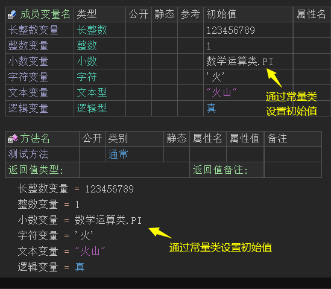
使用“类名.常量名”，优点是便于记忆防止输入错误。
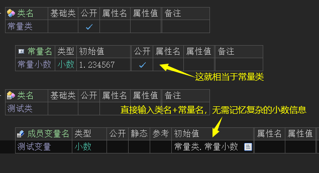
如果常量在当前类中，也可以省略类名直接输入常量名字，如下图所示：
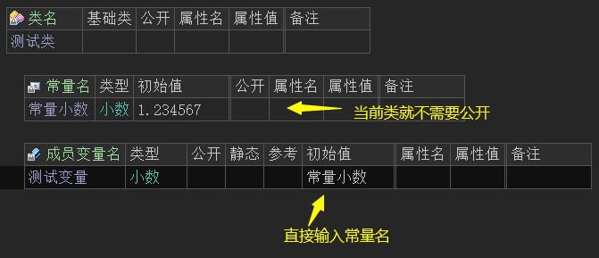
如果要设置的文本型数据为多行文本，可以打开“初始值编辑器”设置内容。
在打开的初始值编辑器中输入想要设置的内容即可。
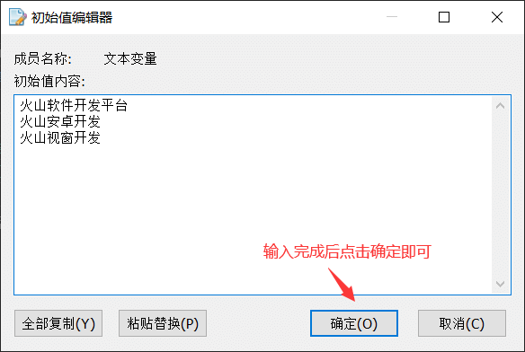
火山视窗平台将自动生成“\r\n”对文本数据进行换行。
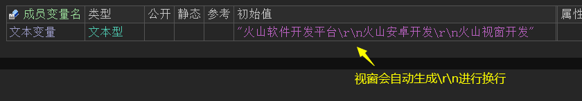
5.4.2 类数据类型变量
(1) 对于类数据类型的变量，除资源类外其它任何类数据类型都不支持在初始化表格中设置初始数据。
注：火山中所引用的外部资源，火山源文件只是引用其文件路径，因此外部文件不能删除，删除后将无法正常编译通过。当程序编译完成后，引用的文件会打包到程序内部，因此不会再依赖引用的外部文件。
火山视窗平台资源类型演示：
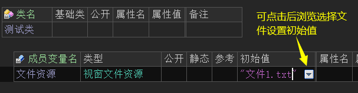
(2) 火山视窗平台，由于暂时不支持定义参考型数据，因此所有非基本数据类型变量均为对应的对象。
5.4.3 数组类型变量
(1) 在易语言中支持直接赋值数组数据，如下所示：
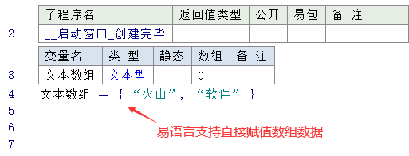
(2) 在火山中不支持等于号赋值，需要在初始值中填写，如下所示：
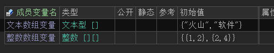
(3) 如果基本数据类型数组未指定初始值，但指定了成员数(如下图所示)，则数值型数组变量的每个成员初始值为0，逻辑型数组变量的每个成员初始值为假。
(4) 其它所有数据类型数组变量的每个成员初始值，在火山视窗平台为对应的对象实例。
5.5 其它注意事项
在火山视窗中变量根据属性不同，还可以分为“公开变量”、“静态变量”。
5.5.1 公开变量
当变量公开后可以被其它类访问。
注：仅针对成员变量，局部变量无此属性。
而非公开变量只能在本类或者其继承类中访问。
5.5.2 静态变量
静态变量即勾选“静态”后的变量称为静态变量，静态变量又分为成员静态变量和局部静态变量。
如下图所示：
成员静态变量有以下特点：
(1) 静态变量在所处类载入后即保持始终存在，并且未存放在类的对象实例中，而只存放在类信息本身中，所以无论定义多少类对象实例，静态成员变量都只存在一份。
(2) 由于静态成员变量存放在类本身中，所以在其所处类/继承类外部需要以“所处类名.静态成员变量名”的方式访问。
利用成员静态变量的特点可以实现类似全局变量的效果，如下图所示，定义了一个成员静态变量后在其它任何类中都可以访问。
如下图所示，如果定义了“测试类”的实例变量去访问“成员静态变量”，虽然代码能被编译器接受但是会提示警告信息，并且火山编译器会自动替换成对应的类去访问。
除此之外，无论定义了几个“测试类”的对象变量，“测试类”的“静态成员变量”始终只存在一份，因此黄色箭头指向的代码所访问的“静态成员变量”，实际上都是同一个。
(3) 由于静态变量初始化时不存在所处类实例对象，因此所静态的变量如果存在“事件方法”将不会自动挂接其事件到其所处类，需要在必要的时候通过“挂接事件()”方法手动挂接事件。
如下图所示，假设“测试类”中存在事件方法，如果想要触发事件，需要通过“挂接事件()”方法手动挂接事件。
6.1 易语言常量概述
（1）易语言中的常量是单独的一个常量表并且为全局常量，即使是不公开常量值也可以在程序的任意位置访问。
（2）常量表有“常量名称、常量值、公开和备注”四种类型，其中“公开”仅对易模块有效。
（3）常量的访问通过“#”访问。
6.2 火山常量概述
在火山中常量和变量一致，都可以定义为“局部常量、成员常量以及全局常量”。
常量的“静态”固定为真不可修改，即:常量并未存放在类的对象实例中，而只存放在类信息本身中，所以无论定义多少类对象实例，常量都只存在一份。
6.2.1 常量的定义
易语言常量定义：
在易语言中需要通过右键常量表进行插入。
当存在常量时，可通过常量表按回车键新增。
火山常量定义：
常量的定义可通过组合快捷键“Ctrl+B”进行创建，或者使用右键菜单中的“插入->插入新常量”来进行定义常量操作。
在类中插入的常量为成员常量，在方法中插入的常量为局部常量。
定义常量后输入名称并在“类型”一栏填写自己需要的类型即可。
如下图所示，在常量类中定义了一个类型为“整数”的“成员常量1”。
如果想要新增常量还可以在已有常量的基础上，按“Enter”(回车键)增加新的常量。
6.2.2 成员常量
成员常量可以在当前类的所有方法中调用，包括静态方法。
注：在易语言中无成员常量概念。
6.2.3 局部常量
局部常量只能在当前方法中被调用，其它方法无法使用，并且只能在常量定义表下方被使用。
如下图所示，定义的两个局部常量只能在常量定义表下调用。
注：在易语言中无局部常量概念。
6.2.4 全局常量
火山中的全局常量和全局变量使用方法一致，都是通过“类名+常量名”的形式访问，如下图所示：
6.2.5 常量的初始值
易语言常量值：
在易语言中，常量不需要填写数据类型，直接提供对应立即数即可。
火山常量值：
在火山中，常量的值设置大致分为以下两个类型，“基本数据类型”和“资源数据类型”。
在基本数据类型中，直接在“初始值”一栏提供对应的数据类型即可，如下所示：
如果为资源数据类型，需要提供对应资源的立即数，火山平台会自动处理所引用的资源数据。
如下图所示，火山视窗平台中的“视窗文件资源”需要提供一个文本型的文件相对路径或绝对路径，可直接在初始值输入或者通过下拉按钮浏览选择。
如果要设置的文本型数据为多行文本，和变量一样设置初始值一样，也可以打开“初始值编辑器”设置内容。
在打开的初始值编辑器中输入想要设置的内容即可。
在火山视窗平台将自动生成“\r\n”对文本进行换行。
如果常量是数组类型，其数组符号内可以提供成员数也可以不提供，需要注意的是如果提供了成员数则务必保证初始值设置的数量和提供的成员数一致。
7.1 易语言资源概述
（1）在易语言中提供了两种资源导入，分别为“声音资源”和“图片资源”都是独立存在的资源表，通过任意资源表也可以导入非声音/图片的资源。
注：导入的资源会打包到源码文件中，导入后外部的文件可以删除。
声音资源如下：
图片资源如下：
（2）在资源被调用时和常量一致，也是通过“#”来引用资源。
声音资源引用演示：
7.2 火山视窗资源概述
（1）在火山视窗中资源并不是单独存在的资源表，而是依赖变量或常量可以在任意位置创建，相比易语言更加灵活，并且提供了多种资源类型。
注：在火山中引用资源并不会打包文件到火山源码中，外部资源文件不可删除。
各种资源引用效果如下：
（2）火山资源的使用方式和变/常量的使用方式一致，如下图所示：
8.1 基本概述
在火山视窗中并无子程序的概念，只有方法。
易语言子程序效果：
火山视窗方法效果：
基本差异如下：
（1）火山视窗方法必须依赖类，无法脱离类独立创建。
（2）火山视窗并无“易包”，但提供了部件DLL，其功能类似于易包。
（3）易语言的子程序默认静态，火山视窗需要手动勾选。
（4）易语言基本数据类型参数支持以参考方式传递，火山不支持(文本型除外)，需要通过使用对应的基本数据类型类(譬如"整数类")来间接实现参考传递; 易语言和火山视窗(除文本型外)非基本数据类型参数均自动以参考方式传递;
易语言整数类型参考演示：
火山整数类型参考演示：
（5）可空属性：
易语言可空演示：
火山可空演示：
在火山中，可使用“@默认值”属性来代替易语言中的可空属性。
（6）火山方法属性也可以通过设置一些属性值实现一些功能，如下图所示：
设置“@视窗.附属文件”后，属性值选择的文件/文件夹会在程序调试或编译发布版时，将其输出到程序所在目录。
（7）创建
易语言创建：
易语言需要使用“Ctrl+N”快捷键进行创建，或者使用右键菜单“新子程序”进行定义。
火山创建：
火山视窗需要使用“Ctrl+M”快捷键进行创建，或者使用右键菜单“插入 -> 插入新方法”进行定义。
（8）易语言子程序分为两种，普通子程序和事件子程序，而火山中根据用途不同，分成以下几类：
1. 通常方法
2. 静态方法
4. 属性方法
5. 事件方法
6. 全局静态方法
7. 虚拟方法
8.2 定义通常方法
如下图所示，即表示定义了一个通常方法：
新建一个类，在类中新建一个方法，并且方法的类别选择“通常”，所定义出来的方法就叫通常方法。
调用通常方法代码如下图：
1. 在外部其他类中调用这个方法首先需要公开此方法。
2. 调用方法的时候需要定义变量，例如：在窗口被首次激活的时候定义“测试类”变量并调用这个方法。
运行结果如下图：
最终按下F5键当程序窗口出现后，会显示一个信息框，证明通常方法被调用成功。
8.3 定义静态方法
(1) 静态方法与通常方法的区别在于，设置静态方法后，可以省去定义变量取调用方法的步骤，静态方法只需要通过“类名+方法名”的形式就可以调用。
如下图所示：
凡是勾选静态的方法，都可以称呼为静态方法。
(2) 在静态方法内部，只能访问其所处类或者其所处类的基础类中的成员常量或者静态成员变量。
如下图所示：
8.4 定义支持以动态格式调用的静态方法
本方法其实也是静态方法的一种，如果静态方法所定义的第一个参数是类本身，那么这样的方法就可以称为是“支持以动态格式调用的静态方法”。
本方法有两种调用形式，既可以通过类名去访问这个方法，又可以定义变量访问这个方法。
如下图所示：
在“测试类”中定义了一个名为“动态方法”的静态方法，第一个参数提供了“测试类”自身，那么在程序中调用这个方法时，就会有两种形式。
(1) 第一种方式是标准的静态方法访问方式。
(2) 第二种就是优化后的方式，其第一个参数被移动到方法访问对象上，这种方式在编译时将被自动转换为第一种方式。
8.5 定义属性
在火山中的属性大致分为三个类别：可读属性，可写属性，可读写属性。可读写属性又分为方法属性和变量属性。
8.5.1 定义可读属性
读属性用于读取当前类中的某些数据值进行返回，其格式必须满足以下条件：
(1) 插入的方法必须公开，且类别需要选择“属性读”。
(2) 不能为静态方法(实际上静态方法也可以用作定义属性，通常情况下用不到，知道即可)。
(3) 不可以提供参数。
(4) 必须提供一个返回值。
如下图所示，在“测试类”中定义了一个返回值为“文本型”的读属性方法，并返回了一个成员变量。
需要注意的是“属性读”虽然是以方法的形式定义，但是在调用这个属性的时候不能使用“变量1.属性读()”的形式访问，正确的访问如下图所示，不需要提供括号。
8.5.2 定义可写属性
写属性用于设置当前类中的某些数据，其格式必须满足以下条件：
(1) 插入的方法必须公开，且类别需要选择“属性写”。
(2) 不能为静态方法(实际上静态方法也可以用作定义属性，普通用户无需掌握，知道即可)。
(3) 必须提供一个参数，提供的这个参数被称为属性值。
(4) 不允许提供返回值。
如下图所示，在“测试类”中定义了一个属性值为“文本型”的写属性方法，并将属性值赋值给了一个成员变量。
虽然“属性写”也是以方法来定义，但是在调用这个属性的时候不能使用“变量1.属性写()”的形式访问，正确的访问如下图所示，属性名和属性值之间用等于号连接。
除上述访问方式外，写属性还可以直接在属性表中访问，如下图所示：
写属性除了直接提供对应值外还支持备选列表，可以通过备选列表设置常用属性值。
视窗平台设置如下图所示，在方法的属性栏使用“@列表选择项”属性值可打开编辑器进行设置。
多条备选值用换行分隔，如果属性值为文本型注意需要提供英文状态下的双引号。
最终设置完成后如下所示，会自动添加\r\n换行，双引号也会自动转义。
如果在安卓平台下，设置完成后会自动使用\n分隔。
无论是安卓还是视窗，最终在使用时效果是一样的，可以通过下拉列表选择属性值，如下图所示：
属性表中的备选列表，除了上述的备选列表形式外，还支持“常量类”形式的备选列表。
“常量类”与“@列表选择项”不同之处在于，常量类的内容是固定的，一旦设置常量类将不支持自定义内容（只能去常量类扩充，但软件需要重新编译），而“@列表选择项”不受此限制。
常量类的定义如下图所示：
注：当前类设置“@常量类”属性后，当前类中只能提供常量，不可以提供变量、方法。
常量类的使用：
(1) 写属性中使用常量类也很简单，首先需要将参数类型设置成对应的常量类的类名。
(2) 然后通过参数名来判断是否为指定常量，从而进行相应的代码操作。
(3) 调用本属性的时候就可以在属性栏下拉选择，如果通过代码设置就需要通过“类名+常量名”的形式设置。
8.5.3 定义可读写属性
可读写属性分为“方法读写属性”和“变量读写属性”，这两个的不同之处在于，方法属性可以在方法中编写代码，对属性值进行一些其它操作，而变量属性不支持。
(1) 方法读写属性
方法读写属性其实就是将“属性写”和“属性读”两个方法配合使用，从而实现同一个属性名既可以读又可以写的效果。
如下图所示，当读写属性配套使用时，方法名可以一致。
注意：读写属性配套使用时，两者的名称必须完全一致，而且读属性方法的返回值数据类型必须与写属性方法的参数数据类型一致，如下图所示的写法是错误的：
只要读写属性按照规范编写，就可以如下图所示进行调用：
(1) 在窗口被首次激活时定义“测试类”变量。
(2) 定义后就可以在属性表中调用“属性方法”写属性用于设置属性值。
(3) 写属性设置后就可以通过同名读属性取出设置的属性值。
当程序运行后，设置的属性内容可以被成功读取。
(2) 变量属性
变量属性即通过成员变量来当属性使用，如下图所示，只要在成员变量的属性表中设置“@属性变量”属性值设置为“真”，就可以在此类变量的属性表中使用这个成员变量设置数据。
当程序运行后，设置的属性内容可以被成功读取。
8.6 定义事件方法
在易语言中只有组件存在事件，其它对象事件只能通过子程序回调来实现，效果不直观。在火山中为了解决这个问题，专门提供了事件方法来处理。
8.6.1 定义事件需要满足以下条件：
(1) 插入的方法“类别”必须设置为“定义事件”。
(2) 访问权限必须为公开。
(3) 不允许设置静态。
(4) 必须填写返回值，并且返回值只能是整数。
(5) 方法内不允许有任何代码。
(6) 事件方法的参数没有要求，根据自己的需求决定是否提供。
如下图所示，在“测试类”中定义了一个名为“测试事件”的事件。因为事件不能平白无故触发，必须要有一个条件，因此这里还定义了一个“触发事件”的通常方法来调用这个事件。
8.6.2 自定义事件的调用与触发：
以火山视窗为例，在窗口类中定义“测试类”的成员变量，光标定位“类型”会出现一个小按钮，点击可出现事件列表选择后可添加添加“测试事件”的事件接收方法。
如下图所示，为对应“接收事件”添加完成后的效果。
8.7 定义全局静态方法
所谓全局静态方法就和易语言中的子程序效果一致，此方法调用的时候不需要输入类名，也不用定义类变量，直接输入方法名即可调用，并且可以无视包名，可以随意的跨包调用。
定义方法如下图所示：
(1) 在方法所处类的属性栏设置“@全局类”，属性值设置为“真”。
(2) 插入的方法需要同时勾选公开和静态，对于返回值类型和参数表没有特殊要求，根据自己的需求填写即可。
定义完成后，就可以在火山程序的任何方法下调用（定义事件方法除外），如下图所示：
8.8 定义虚拟方法
8.8.1 什么是虚拟方法？
如果在火山中，某个类中的某个方法不能满足使用需求，但是我们又不想重新定义一个方法来操作，这个时候就可以利用火山的“虚拟方法”来实现对这个方法进行重写，这样的重写操作在火山中就称为虚拟方法。
例如：一家销售公司每个人都有底薪2000元，每个人的业绩不同提成也不同最终得到的工资也不是不同的。那么这个底薪2000元就可以理解为是虚拟方法，员工A和员工B的提成不同，只需要重写这个2000元底薪加上各自的销售业绩就是实际工资，不需要额外建立员工A方法和员工B方法来单独计算。
8.8.2 虚拟方法的定义和调用
(1) 虚拟方法的定义
定义虚拟方法很简单，只需要在一个通常方法的属性名上填写“@虚拟方法”属性值提供“可覆盖”即可。
(2) 虚拟方法的调用
光标定位类名会出现一个按钮，点击可添加基础类的虚拟方法。
添加完成后如下图所示：
8.8.3 虚拟方法实例
下面以火山视窗为例实现一个简单的虚拟方法的实际应用案例：
(1) 假设有一家销售公司，他们公司的工资都是底薪+提成的形式，因此可以首先定义一个“基本工资类”并新增一个虚拟方法，将实际工资计算出来并返回。
(2) 但是某些员工是新员工，假设为“员工A”，他的工资需要在原薪资的结构上单独计算，因此需要继承一下“基本工资类”并添加“基本工资”虚拟方法。
(3) 假设财务忘记扣税，那么此时可以在此方法下重写本方法进行扣税，并返回扣税后的薪资。也可以进行其它操作，譬如员工迟到从提成里面扣除一些工资，这个就需要根据自己的需求来编写代码。
(4) 假设有一个十年的老员工，为“员工B”，老员工的提成为双倍提成，就可以在“基本工资”的虚拟方法下重写工资计算公式。
(5) 最后在窗口中插入一个“工资计算”方法用于计算最终工资，参数提供“基本工资类”和“提成”，并返回实际工资。
(6) 在主窗口创建完毕事件下，对员工A、B的工资进行计算，因为“员工A、B”都继承了基本工资类，因此其对象实例可以填写到“工资计算”方法中。
(7) 最终可以得出两个员工的真正工资。
员工A的实际工资为：1000(底薪) + 100(提成)-100(税) = 1000元
员工B的实际工资为：1000(底薪) + 100*2(提成) - 100(税) = 1100元
以上就是火山视窗中虚拟方法的实际应用案例，视窗虚拟方法例程下载
在易语言中事件都是单独处理的，如下所示：两个按钮点击后会生成两个子程序，并且互不干扰。
在火山中相同类型的对象事件是统一处理的，如下所示：两个按钮点击后只会生成一个事件方法，需要通过“来源对象”参数来区分是哪个按钮被点击。
通过标记值参数，也可以判断事件来源，如下所示：
注：关于组件布局器相关知识，第三章中会详细介绍。
易语言中的自定义数据类型（又称结构体），可定义一些结构数据，譬如：定义一个学生信息结构，可以非常方便的设置和取出学生信息。
如下图所示：
在火山视窗中，并没有提供和易语言一样的结构表格，但是利用“类+成员变量”的形式可以实现和“自定义数据类型”一样的效果。
注：此方式不能用于调用第三方库时使用。
如果在调用第三方库或者使用微软API时，遇到结构体需要增加一个“@视窗.结构类”属性，如下所示为一个结构体的实际应用：
注：如果第三方库或微软api的结构体需要使用文本型或字节集类，在火山视窗中并不能直接使用这种类型，需要使用“变整数”走指针来获取对应数据。
在易语言中DLL命令是单独的一个表，通过右键“程序数据”可以插入新的DLL命令，用于调用外部库或微软API。
易语言DLL命令演示如下：
易语言调用DLL命令如下：
在火山中DLL命令的定义更加灵活，随便建立一个方法都可以用来表示一个DLL命令。
差别如下：
（1）易语言中的库文件名使用“@视窗.输入”属性来表示。
（2）易语言中库对应的命令名使用“@输出名”属性来表示。
（3）在火山视窗中必须勾选公开静态。
（4）因火山视窗全面采用Unicode编码，因此调用api时需要使用W版本的命令，这里即“CharLowerW”。
（5）如果在易语言中使用DLL命令用到了字节集或文本型，在火山视窗中需要统一使用变整数、用指针来处理。因为火山视窗中的字节集类和文本型是包装类型和易语言中的类型本质上不一致。
调用演示如下：
（1）首先需要取出文本的字节集数据。
（2）取出字节集指针后，放入DLL命令中。
（3）利用“指针到字节集”将结果指针转换成字节集数据。
（4）最后利用“字节集到文本”将结果字节集转换成文本显示。
最终结果：